PEPPERWOOD COMMUNITY NEWSLETTER
Information & Entertainment to build community unity
Start with the Attitude of Gratitude
Begin the day with a friendly voice. A companion, unobtrusive Plays that song that's so elusive And the magic music makes your morning mood.Off on your way, hit the open road There is magic at your fingers For the spirits ever lingers Undemanding contact in your happy solitude. Rush
I am thankful for the feedback on last week’s newsletter.
When the moon is in the Seventh House And Jupiter aligns with Mars Then peace will guide the planets And love will steer the stars This is the dawning of the Age of Aquarius Age of Aquarius
Harmony and understanding Sympathy and trust abounding No more falsehoods or derisions Golden living dreams of visions Mystic crystal revelation And the mind's true liberation, 5th Dimension
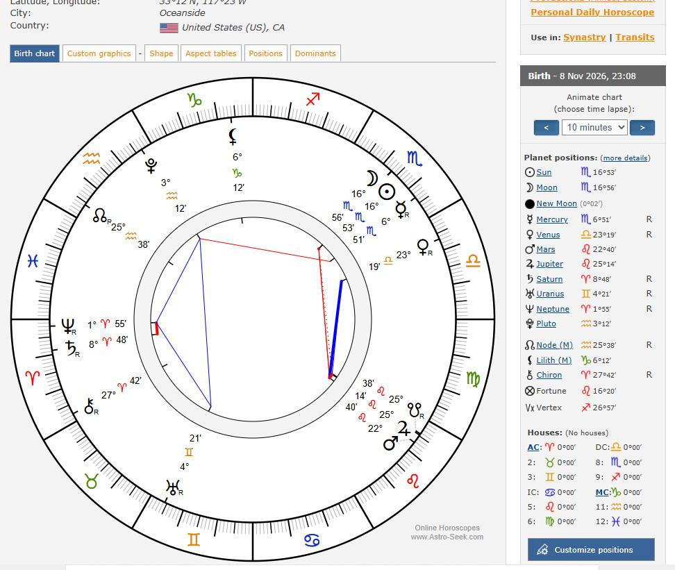
The New Moon is exact on November 9, 2026, 11:02 p.m. PST. This is a New Moon in Scorpio — a classic “dark moon” moment for deep, private transformation rather than loud public launches.
Scorpio themes dominate: intensity, emotional depth, secrets, intimacy, shared resources/power dynamics, shadow work, death/rebirth cycles, and alchemical change. It’s a time to confront what’s been buried, release old emotional patterns or control issues, and set quiet intentions for real regeneration.
- It happens while Mercury is still retrograde in Scorpio (stations direct November 13) and near the end of Venus retrograde. The energy favors review, reflection, and private commitments more than immediate action or big announcements. Many astrologers suggest setting the intention now and launching more visibly after the retrogrades end.
- Often called a “Lunar Samhain” because it falls close to the traditional cross-quarter timing when the veil is considered thin — supporting ancestor work, psychic reflection, and witchy/mystical practices.
- Venus sextile Mars around this time adds a supportive layer for passion, creative expression, chemistry, and going after desires with more ease and charisma.
Dental Report
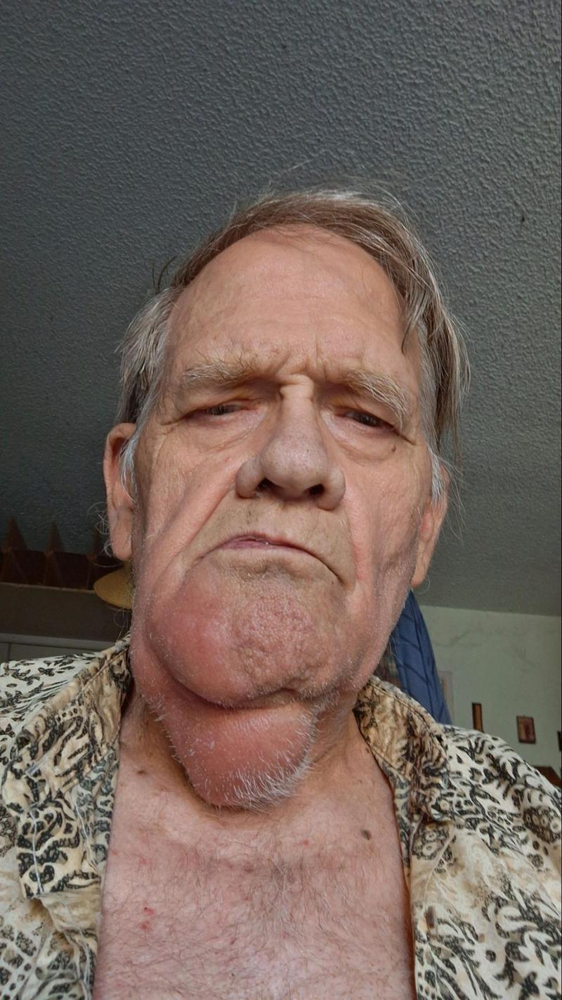
When I was 8, the 1st year of my permanent front teeth, I fell and chipped them in a v shape between them. It was to the root and they had to be capped. My formative years were spent dealing with broken caps and dental visits. My dental adventures continued my entire life. One dentist used rock’n’roll and nitrous oxide. Listening to Ghost in the Machine by the Police on nitrous oxide I had an epiphany/vision.
In The beginning there was ONE. Everything was peace, joy and bliss…but it was boring. ONE wanted to experience itself. So ONE made TWO, and TWO made THREE, until it got to FIVE, then an exponential explosion happened– we are now the infinite creations of the one experiencing itself But I digress…
Last week I got a toothache. I am on a fixed income and I reported a fraud on my credit card so It was canceled. I hoped it would go away and it did for Halloween, But it came back.Not only was there pain but swelling. It got really bad,
Not only did I need to see a dentist but it was Matt’s game day. I moved back into my room to recover. I did see a dentist. They gave me 2 prescriptions and a referral to an oral surgeon. I have 4 teeth that need to be extracted.
I went to the surgeon today. The intake process took longer than the surgery. It went well. The surgeon said I was a stellar patient. There was pain, however I was surprised when he said it was over.
North Coast Oral Surgery - Dr. Nathan Turley
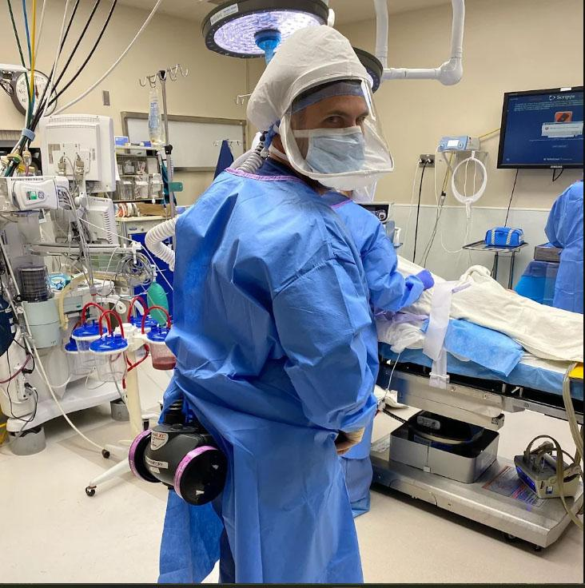
He had all the latest technology. The receptionist was amazingly helpful. She set me up with a payment plan. She used my phone and a computer. The whole time I kept thinking this is my future. Indeed, we are in the new paradigm.
My future is your now. It is changing exponentially. I love to ponder your future. I won’t be here but I am convinced it will be beyond anything I can imagine.
When it is my way, I get a baloney sandwich. When I trust and follow the universe, I get a banquet.
It is my joy to be a muse to inspire creativity in the adventure that is unfolding.

Mental Health Is When There Is No One To Blame
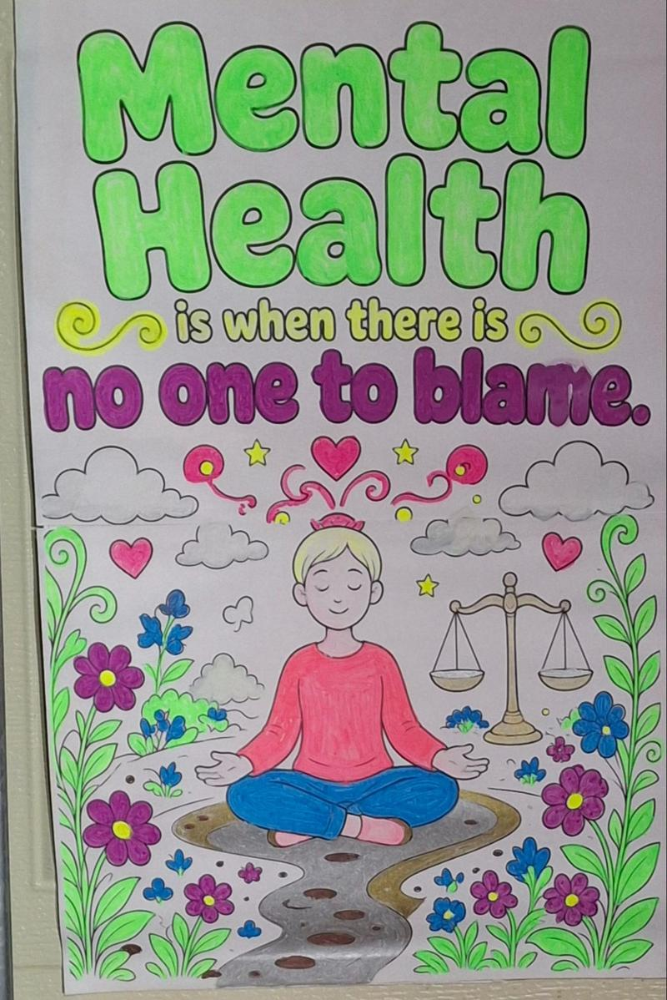
For many years I worked for a company that used shame as a motivator. In companies (and minds) that use shame as fuel, every problem arrives already dressed as a person. The first question is always “Whose fault?”—never “What’s the solution?”
Blame narrows attention to self-protection. Information becomes dangerous. Learning stalls. The people who last longest aren’t the most competent; they’re the best at managing accusations.
The alternative isn’t the absence of responsibility. It’s the ability to look at an outcome—failed project, broken pattern, ordinary wreckage—and ask what’s true without first locating a villain.
That pause is a form of cognitive freedom. The mind that no longer needs a culprit is simply less occupied. What that mind does with the space is, for the first time, up to it.
Integrity: Consistency That Supports Well-Being
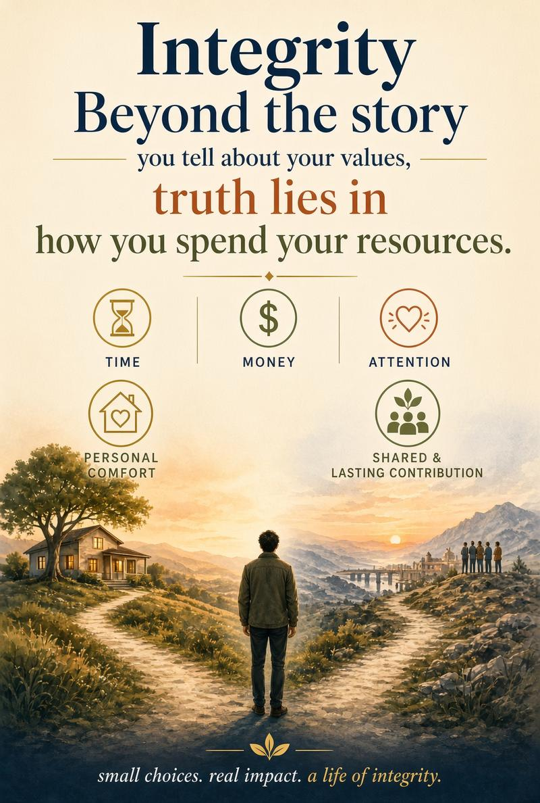
Integrity is the practice of being honest and consistent with your values—with yourself and with others. It means your words and actions largely match what you believe, even when no one is watching.
When behavior aligns with values, internal conflict decreases. Covering up or stretching the truth creates mental strain—worry about being found out, the effort of keeping a story straight, and a sense of distance from yourself. Honesty reduces that tension and supports clearer self-respect.
Integrity also builds trust in relationships. People feel safer and closer when they can rely on someone’s word. For children and adults, repeated honesty strengthens belonging; repeated deception weakens it.
In daily life it appears in ordinary choices: admitting a mistake, keeping a promise, or telling the truth even when it is uncomfortable. It is not about never erring. It is about noticing the gap and choosing to close it. Those small acts of alignment lighten emotional load over time and contribute to a more coherent, steady sense of self.
The Midterms
Jesse Welles
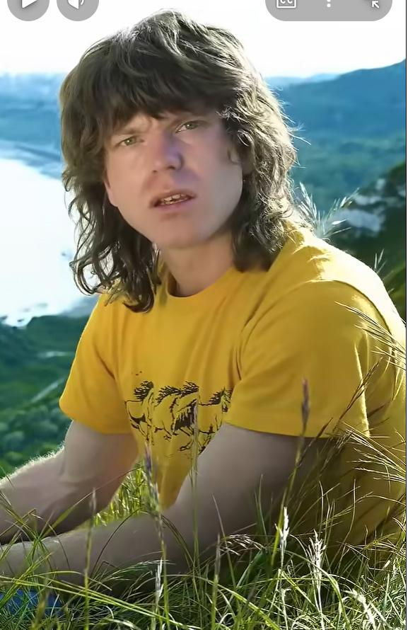
I saw Elon leaving Austin Fat And Hunchback Strange And Pale. A half a billion dollar lesson Them Texans Ain't for sale The ghost of Lindsey Graham Game riding On the seven headed drone And flew right down to the golden golf cart Whispered Donald listen close You can Threatened civilizations, Kill civilians and just laugh You can exterminate races Put folks into cages But You just can't mess with gas Mitch McConnell sat there Speechless But That's kind of his new Thing Who would have ever thought Iran would go and change Out our regime Oh the eyeliner was running as JD Watched The blue storm And he was swearing In the Jihadist to want Healthcare reform.
While that Temu Patton Hegseth crawled to Tennessee and begged But the greatest military defeat in US history had a hold of all his legs All the tech Lords on their banjos their suspenders and craft beers as they dusted off their pronouns seeing that the end was near and they wondered how they’d managed to destroy the planet first they said what about China,China's what about us always seemed a whole lot worse and the people said they did it. It’s a good start sure enough I’ve had the dream before. My head's still sore but yall should probably layer up.
Actions Speak Louder Than Words
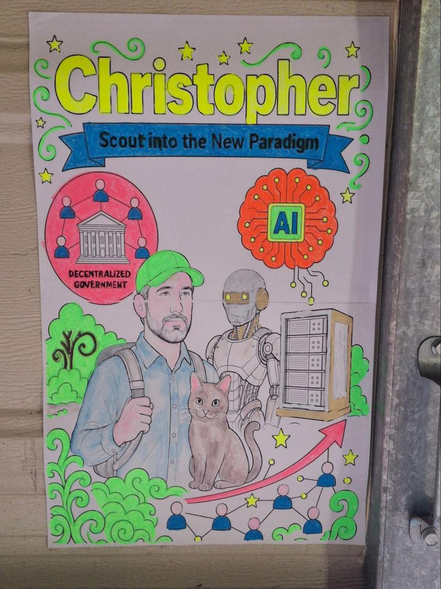
This is inspired by a conversation I had with my friend Christopher, a New Paradigm Scout. I want you to feel the positive joy I feel listening to his tangents. He reviewed my draft about what he said. He liked most of what I had written, but told me not to publish it. He said to stop talking about what I don’t fully understand; rather identify a want in my life and let stellar technology fulfill it. Learn, create and pass on, by. doing
So I gave AI this prompt:
In the world of my imaginings, where AI and robotics fulfill all the basic human needs at near 0 marginal cost and people have time to live lives of passion and service to others, what examples can I report as happening now?
I got a detailed response on: Energy, Food and Agriculture, Housing, Education, information, and cognitive work, People living lives of passion and service,
Bottom line for your report
These are not yet a full post-scarcity world, but they are measurable, ongoing trends you can cite:
- Solar (and increasingly solar+storage) making electricity’s marginal cost approach zero.
- Robotics and automation cutting labor costs in farming, logistics, and construction.
- Digital/AI tools already delivering education, information, and cognitive assistance at near-zero marginal cost.
- Large-scale voluntary contributions (Linux, Wikipedia, open source, FIRE-enabled service) showing people using freed capacity for passion and helping others.
The direction matches the vision; the scale and breadth are still expanding.
I finally stopped talking about it
I got myself an AI assistant. A chief of staff.
I told it I wanted us neighbors to have each other's backs. It suggested we start small, with a signup. Ten minutes later we had one. Then I made it change the name, then change it again, and it never once sighed at me. That's more patience than I've ever had with a form.
So here it is. It takes two minutes. Tell us what you could offer, like rides, meals, yard help, or fixing someone's phone, and what would help you right now. Your info only gets shared if you say it's okay.
If you want to participate Join the Pepperwood Community Network. here.
Shout Out to Jacob
I 1st met Jacob with his girlfriend, Siena walking by. We had a positive connection. Jacob stopped by one Saturday night and we chatted for three hours. He has his own business detailing cars,and says he and Siena are getting married. We made a video for Red Note, it has 2,568 views and 322 likes. It isn't shown on youtube because it might affect his business. He made a home for the wood piece I was offering. He stopped by on Halloween. He was the 1st poster I made after the one I made for Cheshire Blake.
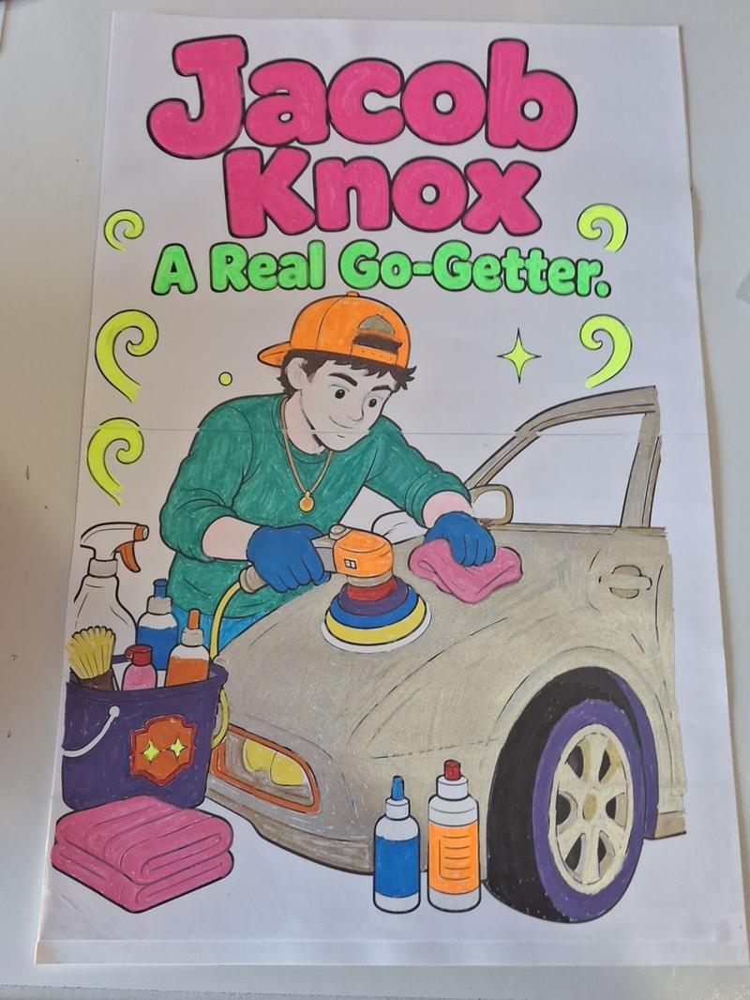
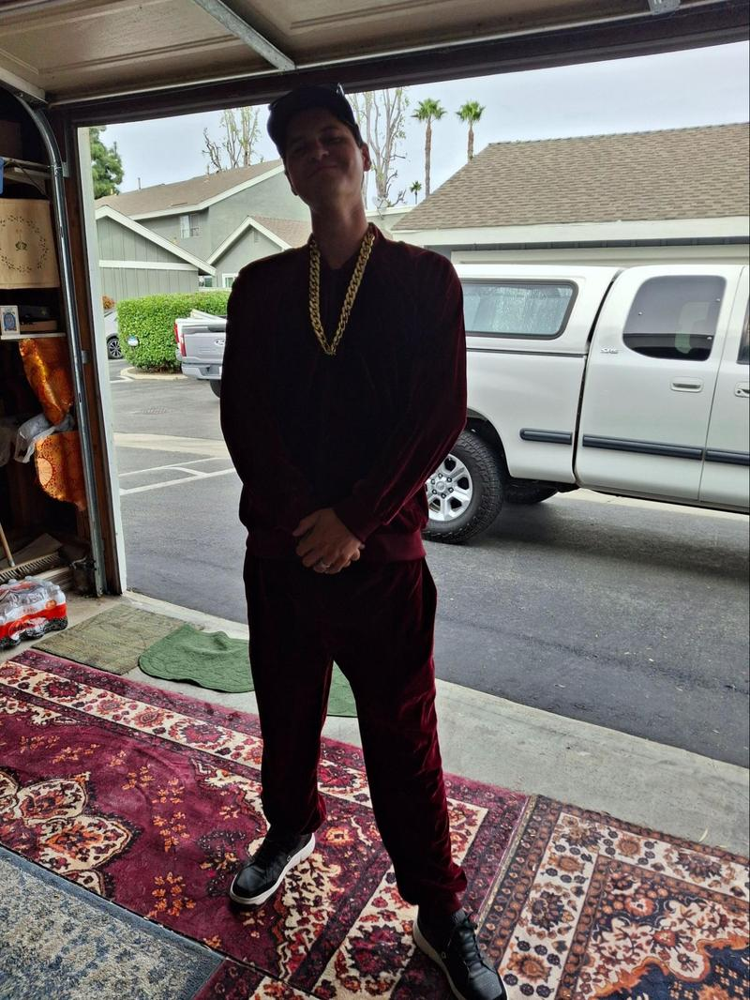
Building a Connection
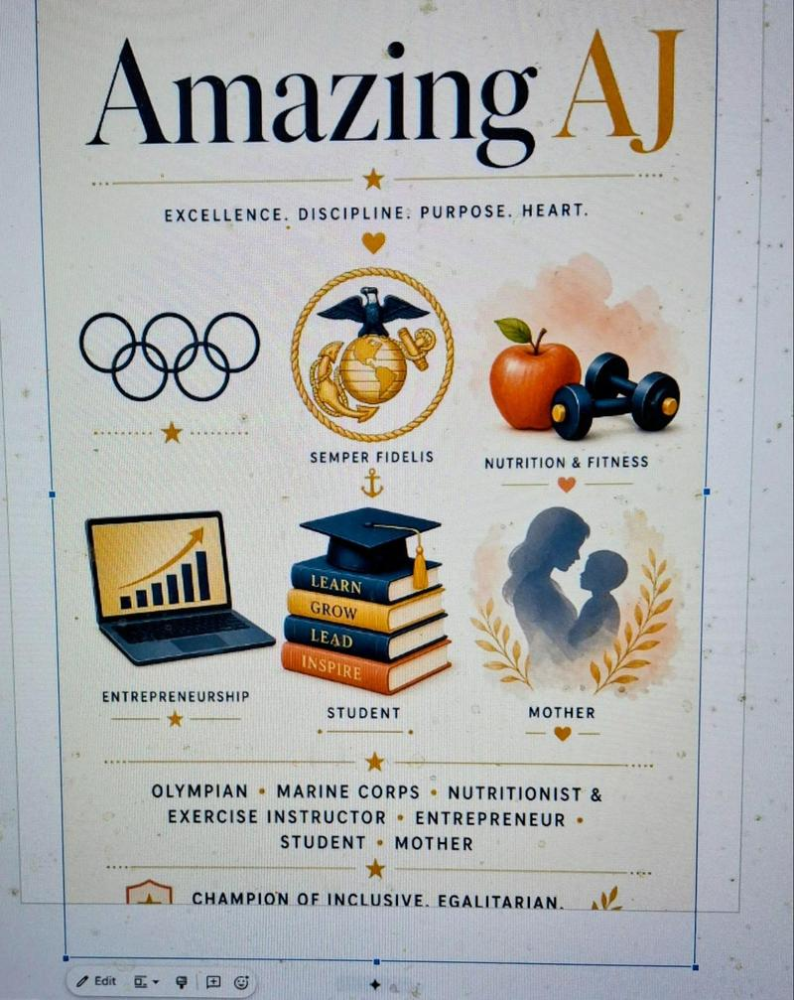
Ajanel, AKA as AJ, was one of the early connections made with the idea of building community. She paused her drive by to say she would come back to chat, She did and our ideas for community aligned and I felt her powerful quality and presence. I waited for a chance to build on that connection. It took awhile but we can email now. I asked for a short article on her ideas for community so I made her a poster based on what I have found out about her so far.
She stoped by on Sundays to check in. I met her daughter and her daughter’s pet reptile. She is super engaged in life. The article about her ideas for community is on her todo list. Perhaps when the semester ends the article will be forthcoming. Meeting in person has me looking up. She is so tall. Her face shines. Her personal power fills the space between us. What a blessing to have her in the community.
First Adopters
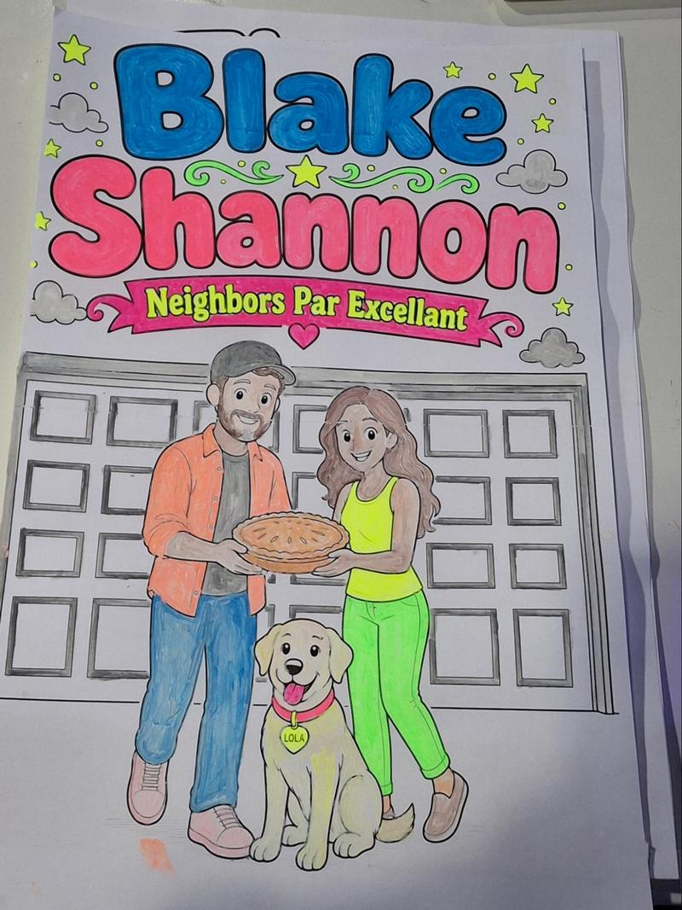
When creating a new way of being it starts with one willing to stand alone and look ridiculous to create the space for it to happen. They must be easy to follow. Then come the 1st adopters with a crucial role. They publicly show everyone how to follow. They are embraced as an equal, so now it is plural. They call their friends to join in. It takes guts to be a 1st adopter, you stand out and brave ridicule yourself. Being a 1st adopter is an under-appreciated form of leadership. The 1st adopter transforms the lone nut into a leader. The leader is the flint, the 1st adopter is the spark that makes the fire.
Inspired by Derek Sivers' TED talk, “How to Start a Movement.”
This is appreciation for Blake and Shannon, the 1st adopters of the idea about building community. They are loving and giving people willing to teach me and others how to be good neighbors and build a sense of caring about each other.
They noticed my door was down for 2 days and expressed concern. They were gone for the weekend and I welcomed them home. They were of good cheer but exhausted. When they leave from their garage they come over and check in. It is authentic and positive. When I hear their car that sounds like a spaceship my vibe goes up. We are learning or I am learning good boundaries. Sometimes they need their thoughts uninterrupted and a wave is sufficient. I feel blessed to acknowledge their space and honor their solitude. I trust they will share when they are clear.
Appreciation
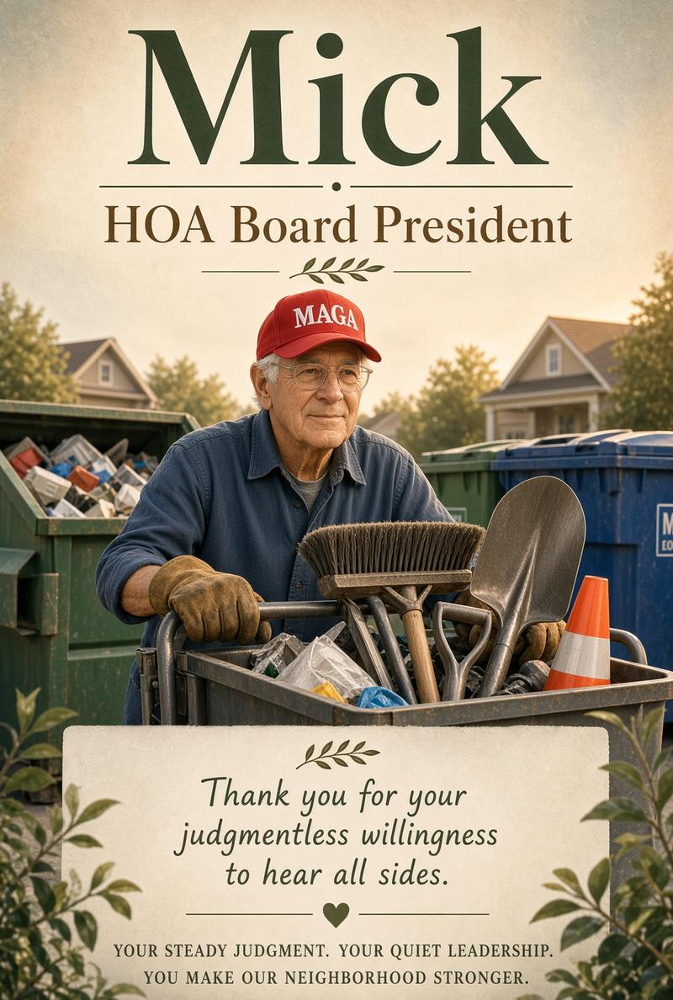
I feel the love of Christ in Mick. He looks in every time he passes by, and his concern for me is authentic. He even faced the weather to attend the Halloween gala when I could not be there.
Mick is older than I am (I’m 75), and he has served as president of the HOA board for as long as I have lived here. I don’t want the job, and it seems no one else does either. Thank you, Mick, for your nonjudgmental willingness to hear all sides, your quiet demeanor, and your practical thinking. Year after year he has quietly shouldered the responsibility most of us prefer to avoid, keeping the community running with steady, unassuming leadership.
He is a tireless servant to the community, especially in keeping the dumpsters in order. You’ll often see him wearing glasses, work gloves, and a MAGA hat, frequently pushing his cart loaded with dumpster tools. He is a born-again Christian. Day after day he monitors the bins, pulls out misplaced items, and works to keep the area clean and usable for everyone. That steady, hands-on care is something few notice until it is no longer there.
Since I realized I could help bring the community more in line with best practices for waste management, I have come to appreciate what it takes to keep things running smoothly. This includes sorting the recycling bin to remove contaminated items so the whole load is not rejected. I used to think I was saving space by nesting empty boxes inside one another, but the better practice is to cut them so they lie flat in the bin. Watching Mick’s consistent effort has helped me understand how much regular attention these details require if we want the system to work well for everyone.
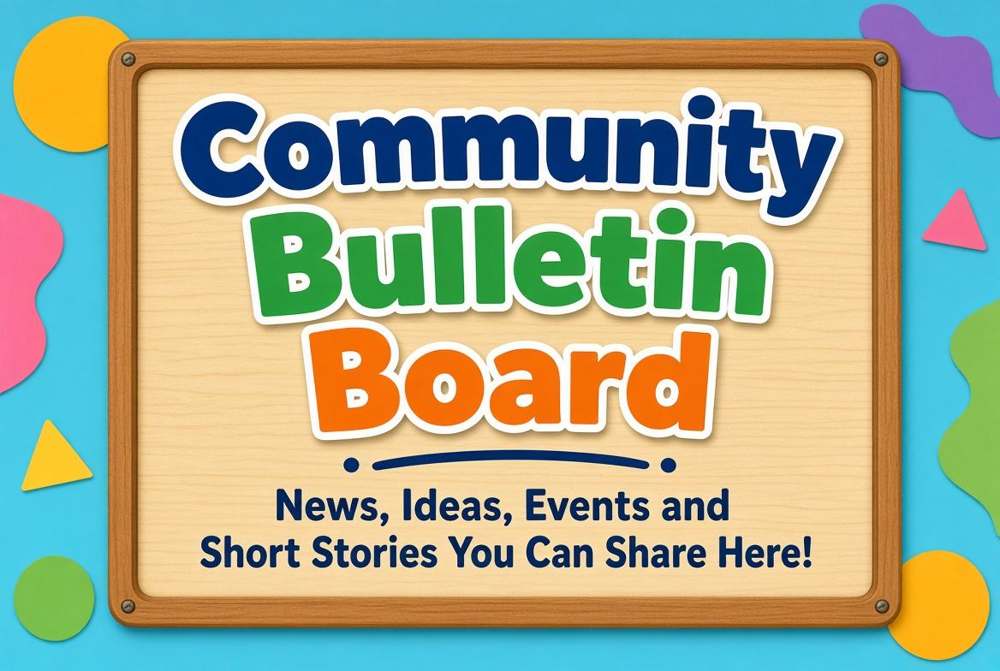
The newsletter is looking for community input. If you have thoughts or ideas you would like to share about your idea of what the community can become, email me at Happy2btxt@gmail,com. Perhaps ideas of what you can do to build a more connected community. The way things are trending the more we can do for each other and the community the less dependent we are on government and corporations.

Tooth be Honest
I have been focused on healing my tooth/teeth. Matt did have a game night that went well. I was in my room more than usual. I still owe Mick an amends.
The article I wrote about the conversion with Christopher, transformed to getting an AI agent and that created a sign up for wants and offers,
The greatest threat from AI is people will not take charge of it, and leave it for those who would use it for profit, harm and control to develop it.
You can’t see the new paradigm of trust and abundance from the old paradigm of fear and scarcity. So be of good cheer, spread love and bring a friend,